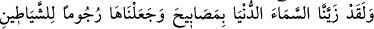

“yorgunluğun kişiyi yorması” anlamınadır. Âyette geçen “ve hüve hasîr” ifâdesi
“hâsirun ve mahsûrun” anlamına gelebilir. Bu cümle “basar” kelimesinden hâl
olabileceği gibi “hâsien” kelimesinde gizli olarak bulunan zamirden hâl de olabilir.
Buna göre kelime içiçe girmiş mütedâhil hâller kabilinden olur. Bâzı âlimlere göre
Allah’ın yaratmış olduğu yaratıklardan birisi hakkında insan mâdem ki böyle bir duruma
düşüyor o zaman Allah Teâlâ’nın kemal, celâl ve cemâl sâhibi bir yaratıcı olarak ilmini
araştırmakta acaba ne duruma düşer, varın siz hesap edin. Allah Teâlâ’nın herhangi bir
mekâna inebileceğini veya herhangi bir kişi ile birleşeceğini söyleyebilen kimsenin
durumunu da varın siz hesap edin. Böyle bir kişiye “cezâ ve azap olarak cehennem
yeter; o ne kötü yerdir.” (el-Bakara, 2/206)
Zâtı herkesi hayrette bırakan Hakk’ı tesbih ederim.
Aklın kavrayışı O’nun kemâlinin künhüne varmaya yol bulamaz.
İlâhın kemâlinin künhüne bir bakış atsın diye,
Akıl bir ömür boyu “hâ” çeşmesi gibi gözlerini açtı.
Fakat ilâh kelimesinin ilk harfinin “elif”i
Sonunda aklın iki gözüne mil çekti.
et-Te’vilâtü’n-necmiyye’de bu âyet-i kerîme şöyle tefsir olunuyor: Sen zâhirî gözünü
eşyanın zavâhirine çevir, onun dış görüntüsüne bak. Bâtınî gözünle de eşyanın iç
taraflarına bak. Bir başka ifâdeyle; sen hem basarını, hem de basîretini; yâni kalp
gözünü birleştirerek eşyanın hem zâhirine hem de bâtınına bak. Bak bakalım,
mevcûdatın her birinin kendi istidâdına göre her hak sâhibine hakkını verme noktasında
herhangi bir çatlaklık görebilecek misin? Sonra gözünü bir kez daha çevir de bak. O göz
hakir, yorgun, çatlaklığı göremeden, herhangi bir sakatlığı izleyemeden sana geri
dönecektir. Nitekim Huccetu’l-İslam İmam Gazzâli (k.s.) şöyle der: Mümkinler
içerisinde şu varlık âleminden daha güzel ve eşsiz olanı yoktur. Çünkü var olsaydı da
Allah bunu ortaya çıkarmamış olsaydı bu cimrilik olurdu. Oysa Allah Teâlâ çok
cömerttir. Yine böyle bir durum âcizlik olurdu, oysa Allah her şeye kadirdir. Nitekim
âyet-i kerîmede şöyle buyruluyor: “(Allah,) her şeye hilkatini (varlık ve özelliğini)
veren, sonra da doğru yolu gösterendir.” (Tâhâ, 20/50)
Bâzı âlimlere göre mümkinat âleminde şu mevcûd âlemden daha zâhir olanı yoktur.
Çünkü ortada iki mertebeden başka hiçbir mertebe yoktur. Birinci mertebede Hak vardır
ve o kıdem mertebesidir. Âlem ise ikinci mertebede olup imkân ve hudûs
mertebesindedir. Allah Teâlâ sonsuza kadar ne kadar yaratık yaratırsa yaratsın, bütün bu
yarattıkları hep imkân mertebesi olan ikinci mertebede olacaktır.